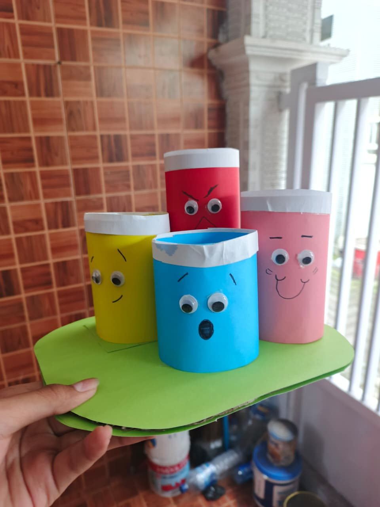

FUNGSI DARI KARYA KERAJINAN SAYA INI, SAYA MEMILIH BENDA INI KARENA MENURUT SAYA
SEORANG YANG SEDIKIT TELEDOR DALAM MENARUH BENDA BENDA SAYA SEPERTI ALAT TULIS
KARENA SAYA SETIAP KALI MENEMUKAN ATAU MENCARI TAG BARU SAYA SERING KALI MENULIS
AGAR TIDAK LUPA. DAN UNTUK MENGHIASI MEJA SAYA (BIAR ADA HIASAN). KENDALA YANG SAYA
HADAPI DALAM MENCARI BARANG BARANG KARENA LUMAYAN SULIT DITEMUKAN TERKUSUS BOTOL.
SAYA HARAP DENGAN KEBERADAAN KOTAK PENSIL INI SAYA TIDAK KEHILANGAN KEMBALI BARANG
ALAT TULIS SAYA DI MEJA BELAJAR SAYA.